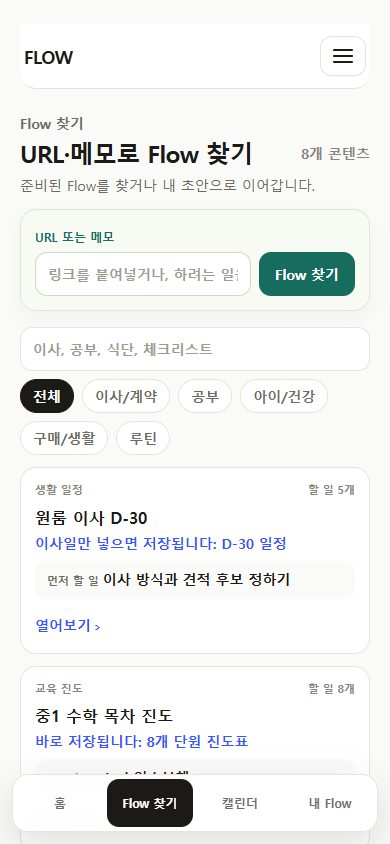
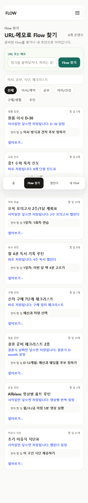
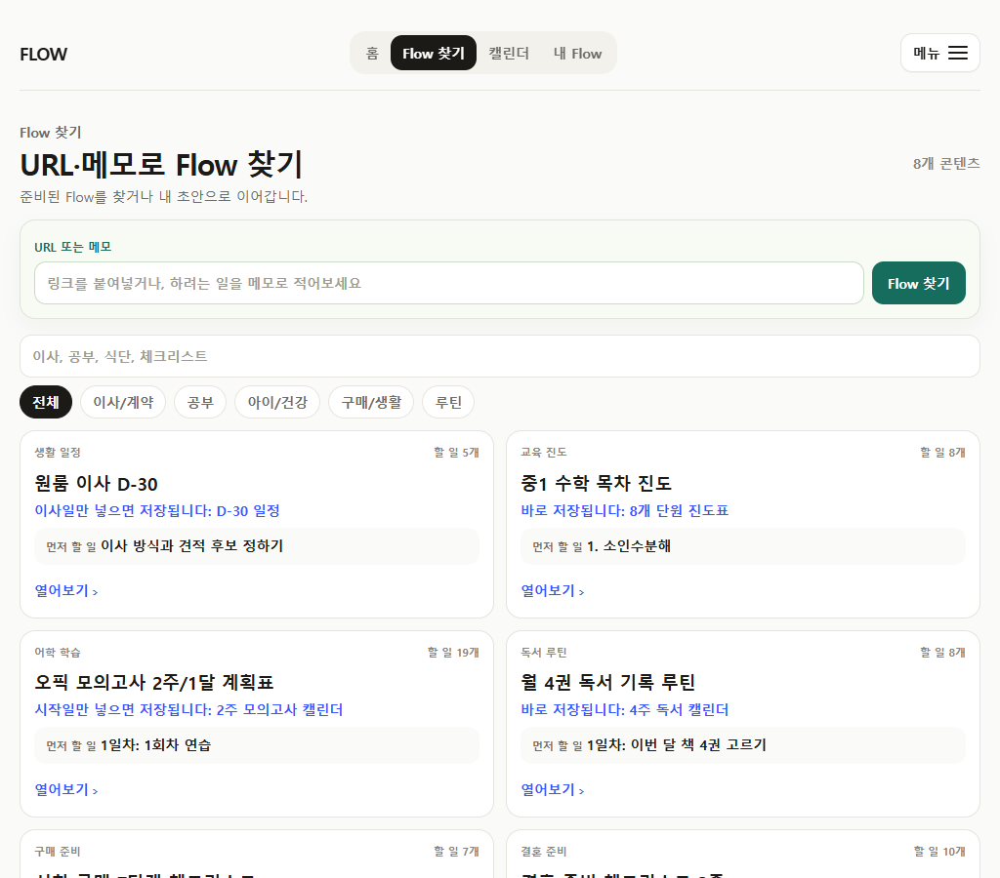
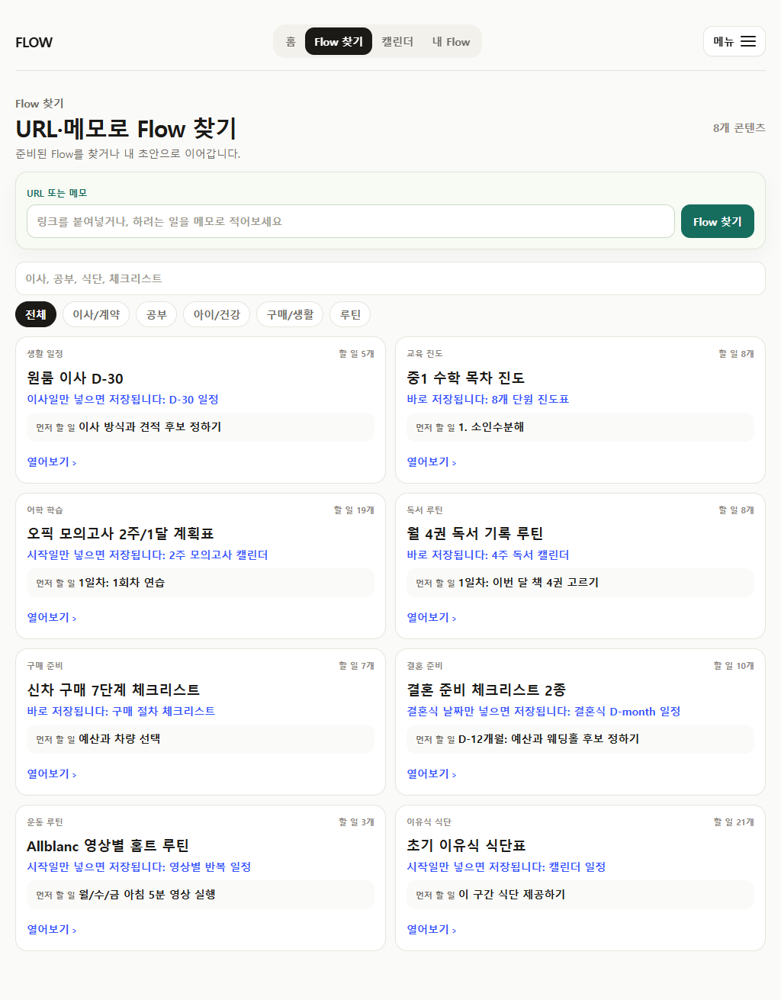

2026-07-12 · current production build
현재 사용자가 고를 콘텐츠만 보이는가
과거 review 화면이나 숨긴 재고가 아니라 현행 /flows production surface를 모바일 390px과 wide 1024px에서 다시 검사했다.
11 → 8browse cards
8 → 0generic categories
2 → 1same-job moving cards
0horizontal overflow
판단
일반 탐색은 고유한 ready/candidate 콘텐츠만 보여준다. 재검토 콘텐츠와 비교용 중복은 목록에서 숨기되 direct route, exact URL lookup, 기존 저장 기록은 보존한다.
모바일 390px


Wide 1024px

